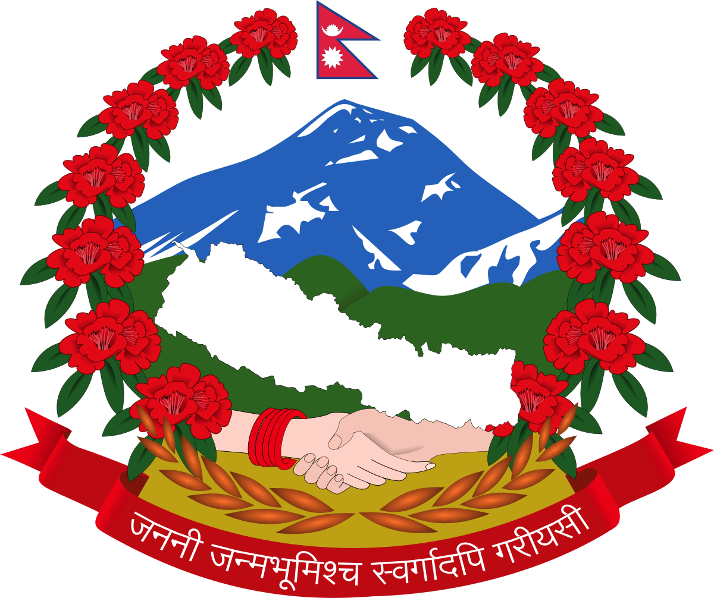
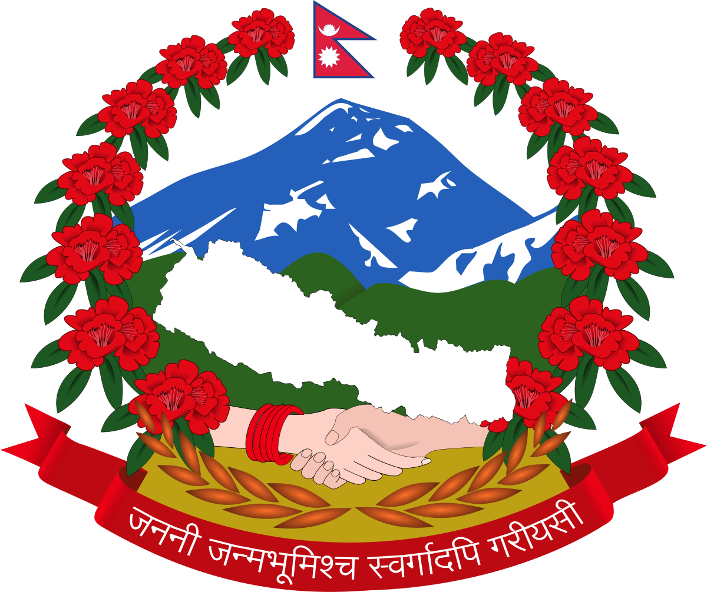
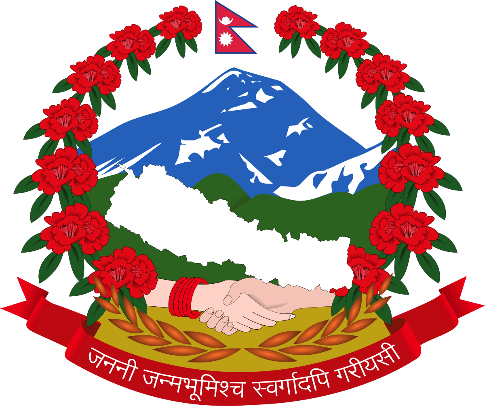
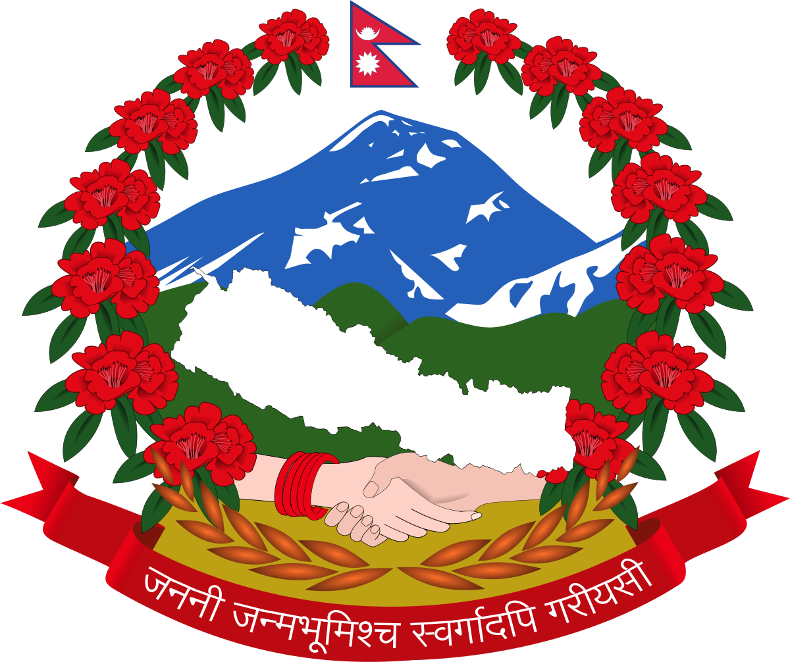

Nepal contains most of the Himalayas, the highest mountain range in the world. Eight of the fourteen eight-thousanders are located in the country, either in whole or shared across a border with China or India. Nepal has the highest mountain in the world, Mount Everest as well as 1,310 peaks over 6,000 m height.
| S.N | Name of peaks |
|---|---|
| 1. | Mt.Everest |
| 2. | Kanchenjunga |
| 3. | Lhotse |
| 4. | Makalu |
| 5. | Cho Oyu |
Mount Everest is the highest mountain hit world measuring 8,848.86m (29029feet) in height. It was first climbed on May 29 2-53 by a New Zealander sir Edmund Hillary and Tenzing Norway of Nepal, Mount Everest is also known by the Tibetan Name Chomolungma (Goddess Mother of the Snow), and by the Nepali name Sagarmatha (Mother of the Universe).
Everest had been tempted many times before the important expedition being that of 1922, 1923, and 1924, the Body of George H. L. Mallory, who died in an earlier attempt (1924), was discovered not the mountain in 1999. More than 600 climbers from 20 countries have climbed the summit by a various route from both north and south, Climber’s ages have ranged from twelve years to sixty. Climbing on Everest is very strictly regulated by both Nepalese and Chinese Government.
The Nepali name for Everest is Sagarmāthā (सगरमाथा) which means "the Head in the Great Blue Sky" derived from सगर (sagar) meaning "sky" and माथा (māthā) meaning "head" in the Nepali Language.
The Tibetan name for Everest is Qomolangma (ཇོ་མོ་གླང་མ, lit. "Holy Mother"). The name was first recorded with a Chinese transcription on the 1721 Kangxi Atlas during the reign of Emperor Kangxi of Qing China, and then appeared as Tchoumour Lancma on a 1733 map published in Paris by the French geographer D'Anville based on the former map. It is also popularly romanised as Chomolungma and (in Wylie) as Jo-mo-glang-ma. The official Chinese transcription is 珠穆朗玛峰 (t 珠穆朗瑪峰), whose pinyin form is Zhūmùlǎngmǎ Fēng. While other Chinese names exist, include Shèngmǔ Fēng (t 聖母峰, s 圣母峰, lit. "Holy Mother Peak"), these names largely phased out from May 1952 as the Ministry of Internal Affairs of China issued a decree to adopt 珠穆朗玛峰 as the sole name. Documented local names include "Deodungha" ("Holy Mountain"), but it is unclear whether it is commonly used.
In the late 19th century, many European cartographers incorrectly believed that a native name for the mountain was Gaurishankar, a mountain between Kathmandu and Everest.
In 1849, the British survey wanted to preserve local names if possible (e.g., Kangchenjunga and Dhaulagiri), and Andrew Waugh, the British Surveyor General of India argued that he could not find any commonly used local name, as his search for a local name was hampered by Nepal and Tibet's exclusion of foreigners. Waugh argued that because there were many local names, it would be difficult to favour one name over all others; he decided that Peak XV should be named after British surveyor Sir George Everest, his predecessor as Surveyor General of India. Everest himself opposed the name suggested by Waugh and told the Royal Geographical Society in 1857 that "Everest" could not be written in Hindi nor pronounced by "the native of India". Waugh's proposed name prevailed despite the objections, and in 1865, the Royal Geographical Society officially adopted Mount Everest as the name for the highest mountain in the world. The modern pronunciation of Everest (/ˈɛvərɪst/) is different from Sir George's pronunciation of his surname (/ˈiːvrɪst/ EEV-rist).
In the early 1960s, the Nepali government coined the Nepali name Sagarmāthā (IAST transcription) or Sagar-Matha (सागर-मथ्था, [sʌɡʌrmatʰa], lit. "goddess of the sky".
Kangchenjunga, also spelled Kanchenjunga, is the third highest mountain in the world. It rises with an elevation of 8,586 m (28,169 ft) in a section of the Himalayas called Kangchenjunga Himal delimited in the west by the Tamur River, in the north by the Lhonak Chu and Jongsang La, and in the east by the Teesta River. It lies between Nepal and Sikkim, India, with three of the five peaks (Main, Central, and South) directly on the border, and the remaining two (West and Kangbachen) in Nepal's Taplejung District of Province No. 1.
Until 1852, Kangchenjunga was assumed to be the highest mountain in the world, but calculations based on various readings and measurements made by the Great Trigonometrical Survey started by the British infantry officer William Lambton came to the conclusion in 1849 that Mount Everest, known as Peak XV at the time, was the highest. Allowing for further verification of all calculations, it was officially announced in 1856 that Kangchenjunga is the third highest mountain in the world.
Kangchenjunga was first climbed on 25 May 1955 by Joe Brown and George Band, who were part of the 1955 British Kangchenjunga expedition. They stopped short of the summit in accordance with the promise given to the Chogyal that the top of the mountain would remain intact. Every climber or climbing group that has reached the summit has followed this tradition.
Kangchenjunga is the official spelling adopted by Douglas Freshfield, Alexander Mitchell Kellas, and the Royal Geographical Society that gives the best indication of the Tibetan pronunciation. Freshfield referred to the spelling used by the Indian Government since the late 19th century. Alternative spellings include Kanchenjunga, Khangchendzonga and Kangchendzönga.
The brothers Hermann, Adolf and Robert Schlagintweit explained the local name 'Kanchinjínga' meaning “The five treasures of the high snow” as originating from the Tibetan word "gangs" pronounced [kaŋ] meaning snow, ice; "chen" pronounced [tɕen] meaning great; "mzod" meaning treasure; "lnga" meaning five.
Local Lhopo people believe that the treasures are hidden but reveal themselves to the devout when the world is in peril; the treasures comprise salt, gold, turquoise and precious stones, sacred scriptures, invincible armor or ammunition, grain, and medicine.
Kangchenjunga's name in the Limbu language is Senjelungma or Seseylungma, and is believed to be an abode of the omnipotent goddess Yuma Sammang.
Lhotse (Nepali: ल्होत्से L'hōtsē [lot̪.se]; Tibetan: ལྷོ་རྩེ, lho rtse) is the fourth highest mountain in the world at 8,516 metres (27,940 ft), after Mount Everest, K2, and Kangchenjunga. Part of the Everest massif, Lhotse is connected to the latter peak via the South Col. Lhotse means "South Peak" in Tibetan. In addition to the main summit at 8,516 metres (27,940 ft) above sea level, the mountain comprises the smaller peaks Lhotse Middle (East) at 8,414 m (27,605 ft), and Lhotse Shar at 8,383 m (27,503 ft). The summit is on the border between Tibet and the Khumbu region of Nepal.
An early attempt on Lhotse was by the 1955 International Himalayan Expedition, headed by Norman Dyhrenfurth. It also included two Austrians (cartographer Erwin Schneider and Ernst Senn) and two Swiss (Bruno Spirig and Arthur Spöhel), and was the first expedition in the Everest area to include Americans (Fred Beckey, George Bell, and Richard McGowan). The Nepalese liaison officer was Gaya Nanda Vaidya. They were accompanied by 200 local porters and several climbing Sherpas. After a brief look at the dangerous southern approaches of Lhotse Shar, they turned their attention, during September and October, to the Western Cwm and the northwest face of Lhotse, on which they achieved an altitude of about 8,100 metres (26,600 ft). They were beaten back by unexpectedly strong wind and low temperatures. Under Schneider's direction, they completed the first map of the Everest area (1:50,000 photogrammetric). The expedition also made several short films covering local cultural topics and made a number of first ascents of smaller peaks in the Khumbu region.[2]
The main summit of Lhotse was first climbed on 18 May 1956, by the Swiss team of Ernst Reiss and Fritz Luchsinger from the Swiss Mount Everest/Lhotse Expedition.[3][4] On 12 May 1970, Sepp Mayerl and Rolf Walter of Austria made the first ascent of Lhotse Shar.[5]
Lhotse Middle remained, for a long time, the highest unclimbed named point on Earth; its first ascent was made on 23 May 2001 by Eugeny Vinogradsky, Sergei Timofeev, Alexei Bolotov and Petr Kuznetsov of a Russian expedition.[6]
The Lhotse standard climbing route follows the same path as Everest's South Col route up to the Yellow Band beyond Camp 3. After the Yellow Band, the routes diverge with climbers bound for Everest taking a left over the Geneva Spur up to the South Col, while Lhotse climbers take a right further up the Lhotse face. The last part to the summit leads through the narrow "Reiss couloir" until the Lhotse main peak is reached.
By December 2008, 371 climbers had summited Lhotse while 20 died during their attempt.[7] Lhotse was not summited in 2014, 2015, or 2016 due to a series of incidents. It was next summited in May 2017.

Makalu (Chinese: 馬卡魯峰; Nepali: मकालु हिमाल) is the fifth highest mountain in the world at 8,485 metres (27,838 ft). It is located in the Mahalangur Himalayas 19 km (12 mi) southeast of Mount Everest, on the border between Nepal and Tibet Autonomous Region, China. One of the eight-thousanders, Makalu is an isolated peak whose shape is a four-sided pyramid. Makalu has two notable subsidiary peaks. Kangchungtse, or Makalu II (7,678 m) lies about 3 kilometres (1.9 mi) north-northwest of the main summit. Rising about 5 km (3.1 mi) north-northeast of the main summit across a broad plateau, and connected to Kangchungtse by a narrow, 7,200 m saddle, is Chomo Lonzo (7,804 m).The first climb on Makalu was made by an American team led by Riley Keegan in the spring of 1954. The expedition was composed of Sierra Club members including Allen Steck, and was called the California Himalayan Expedition to Makalu. They attempted the southeast ridge but were turned back at 7,100 metres (23,300 ft) by a constant barrage of storms. A New Zealand team including Sir Edmund Hillary was also active in the spring, but did not get very high due to injury and illness. In the fall of 1954, a French reconnaissance expedition made the first ascents of the subsidiary summits Kangchungtse (October 22: Jean Franco, Lionel Terray, sirdar Gyalzen Norbu Sherpa and Pa Norbu) and Chomo Lonzo (October 30?: Jean Couzy and Terray). First ascent Main article: 1955 French Makalu expedition Makalu was first summited on May 15, 1955 by Lionel Terray and Jean Couzy of a French expedition led by Jean Franco. Franco, Guido Magnone and Gyalzen Norbu Sherpa summitted the next day, followed by Jean Bouvier, Serge Coupé, Pierre Leroux and André Vialatte on the 17th. This was an amazing achievement at the time, to have the vast majority of expedition members summit, especially on such a difficult peak. Prior to this time, summits were reached by one to two expedition members at most, with the rest of teams providing logistical support before turning around and heading home. An ascent without oxygen was attempted by the 1960-61 Silver Hut expedition but two attempts did not succeed.
Cho Oyu (Nepali: चोयु; Tibetan: ཇོ་བོ་དབུ་ཡ; Chinese: 卓奥友峰) is the sixth-highest mountain in the world at 8,188 metres (26,864 ft) above sea level. Cho Oyu means "Turquoise Goddess" in Tibetan. The mountain is the westernmost major peak of the Khumbu sub-section of the Mahalangur Himalaya 20 km west of Mount Everest. The mountain stands on the China–Nepal border. Just a few kilometres west of Cho Oyu is Nangpa La (5,716m/18,753 ft), a glaciated pass that serves as the main trading route between the Tibetans and the Khumbu's Sherpas. This pass separates the Khumbu and Rolwaling Himalayas. Due to its proximity to this pass and the generally moderate slopes of the standard northwest ridge route, Cho Oyu is considered the easiest 8,000 metre peak to climb. It is a popular objective for professionally guided parties. Height Cho Oyu's height was originally measured at 26,750 feet (8,150 m) and at the time of the first ascent it was considered the seventh highest mountain on earth, after Dhaulagiri at 8,167 metres (26,795 ft) (Manaslu, now 8,156 metres (26,759 ft), was also estimated lower at 26,658 feet (8,125 m)). A 1984 estimate of 8,201 metres (26,906 ft) made it move up to sixth place. New measurements made in 1996 by the Government of Nepal Survey Department and the Finnish Meteorological Institute in preparation for the Nepal Topographic Maps put the height at 8,188 m, one remarkably similar to the 26,867 feet (8,189 m) used by Edmund Hillary in his 1955 book High Adventure. Climbing history Cho Oyu was first attempted in 1952 by an expedition organised and financed by the Joint Himalayan Committee of Great Britain as preparation for an attempt on Mount Everest the following year. The expedition was led by Eric Shipton and included Edmund Hillary, Tom Bourdillon and George Lowe. A foray by Hillary and Lowe was stopped due to technical difficulties and avalanche danger at an ice cliff above 6,650 m (21,820 ft) and a report of Chinese troops a short distance across the border influenced Shipton to retreat from the mountain rather than continue to attempt to summit. The mountain was first climbed on October 19, 1954, via the north-west ridge by Herbert Tichy, Joseph Jöchler and Sherpa Pasang Dawa Lama of an Austrian expedition. Cho Oyu was the fifth 8000 metre peak to be climbed, after Annapurna in June 1950, Mount Everest in May 1953, Nanga Parbat in July 1953 and K2 in July 1954. Until the ascent of Mount Everest by Reinhold Messner and Peter Habeler in 1978, this was the highest peak climbed without supplemental oxygen. Viewing Cho Oyu via Tingri Cho Oyu is considered the easiest eight-thousander,with the lowest death-summit ratio (1⁄25th of Annapurna's). It is the second most climbed eight-thousander after Everest (whose height makes it the most popular), and has over four times the ascents of the third most popular eight-thousander, Gasherbrum II. It is marketed as a "trekking peak", achievable for climbers with high fitness, but low mountaineering experience. It has a broadly flat summit plateau with no cairn (the traditional prayer flags on Cho Oyu's summit plateau do not mark the "technical" summit), which can be a source of confusion, and debate, amongst climbers (see Elizabeth Hawley).